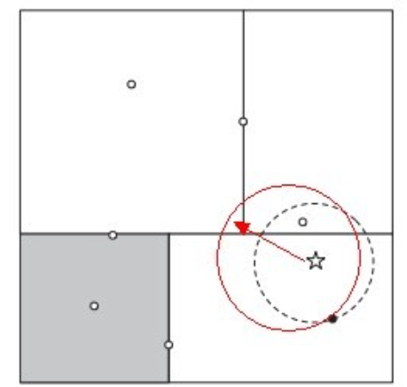
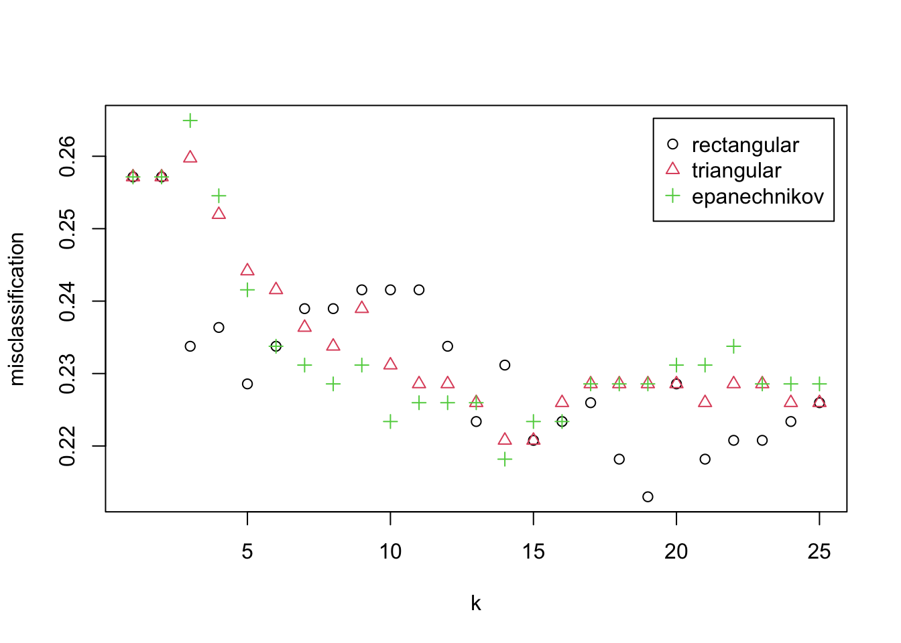

Chapter 32 KNN
32.1 Introduction
分类问题:
- 线性问题:
- 逻辑斯蒂回归，它被用来预测一个观测属于某个响应变量分类的概率
- 非线性技术：不再必须使用特征的线性组合来定义决策边界
- K最近邻（KNN）
- 支持向量机（SVM）
不一定能得到更好的预测结果，而且解释模型也会有一点问题，计算效率也更低。正确使用这些技术时，可以作为其他 技术和工具的强有力的补充.
逻辑斯蒂回归，它被用来预测一个观测属于某个响应变量分类的概率—— 我们称之为分类问题。逻辑斯蒂回归只是分类方法的开始，还可以使用很多其他方法改善预测 质量。
两种非线性技术：K最近邻（KNN）与支持向量机（SVM）。这两种技术要比我们之前讨论的那些技术复杂一些，因为放弃了线性假设. 也就是说，不再必须使用特征的线性组合来定义决策边界。
这样不一定能得到更好的预测结果，而且解释模型也会有一点问题，计算效率也更低。正确使用这些技术时，可以作为其他 技术和工具的强有力的补充
K最近邻(k-Nearest Neighbor，KNN)分类算法，是一个理论上比较成熟的方法，也是最简单的机器学习算法之一。该方法的思路是：在特征空间中，如果一个样本附近的k个最近(即特征空间中最邻近)样本的大多数属于某一个类别，则该样本也属于这个类别。k的作用是确定算法应该检查多少个近邻，如果k = 5，算法将检查5个最近的点。这种方法的缺点 是，所有5个点在算法中都被赋予相同的权重
如果k太小，那么测试 集上的观测可能会有很高的方差——尽管偏差很低。另一方面，当k增加时，方差会减小，但偏 差可能会变得不可接受。必须进行交叉验证以确定合适的k值。
另一个需要指出的重要问题是距离的计算，或者说是特征空间中数据点的临近度的计算。默 认的距离是欧氏距离，也就是从点A到点B的简单直线距离——就像乌鸦飞过的直线。你也可以 使用公式计算，欧氏距离等于两点坐标之差的平方和的平方根
KNN算法不仅可以用于分类，还可以用于回归。通过找出一个样本的k个最近邻居，将这些邻居的属性的平均值赋给该样本，就可以得到该样本的属性。更有用的方法是将不同距离的邻居对该样本产生的影响给予不同的权值(weight)，如权值与距离成反比。该算法在分类时有个主要的不足是，当样本不平衡时，如一个类的样本容量很大，而其他类样本容量很小时，有可能导致当输入一个新样本时，该样本的K个邻居中大容量类的样本占多数。 该算法只计算“最近的”邻居样本，某一类的样本数量很大，那么或者这类样本并不接近目标样本，或者这类样本很靠近目标样本。无论怎样，数量并不能影响运行结果。可以采用权值的方法（和该样本距离小的邻居权值大）来改进。
该方法的另一个不足之处是计算量较大，因为对每一个待分类的文本都要计算它到全体已知样本的距离，才能求得它的K个最近邻点。目前常用的解决方法是事先对已知样本点进行剪辑，事先去除对分类作用不大的样本。该算法比较适用于样本容量比较大的类域的自动分类，而那些样本容量较小的类域采用这种算法比较容易产生误分。
支持向量机（Support Vector Machine, SVM）是一类按监督学习（supervised learning）方式对数据进行二元分类的广义线性分类器（generalized linear classifier），其决策边界是对学习样本求解的最大边距超平面（maximum-margin hyperplane）
如果数据不是线性可分的，很多观测值就会落到分类边际错误的一侧（所谓松弛 变量），这就是误分类。建立SVM算法的关键是，通过交叉验证找出最优数量的 支持向量。任何一个正好位于最大分类边际上的观测都可以被认为是支持向量。
如果误差值的调优参数过大，你就会找到很多支持向量，受到高偏差低方差的困扰。而如果 调优参数过小，就会出现相反的情况。
SVM中的另一个重要问题是处理非线性模型的能力，非线性模型的输入特征带有二次项或更 高阶的多项式。在SVM中，这种处理被称为核技巧。对于任何模型，你都可以通过不同阶数的多项式、交互项或其他衍生项来扩展特征的数量。 在大规模数据集中，这样做可能失控。SVM中的核技巧可以使我们有效扩展特征空间，目的是使 特征空间近似于线性可分.
SVM最优化问题及其约束条件。我们希望:
找出使边际最大的权值。
满足约束条件：没有（或尽量少的）数据点位于边际之内。
核函数的巧妙之处在于，它将特征到高维空间的转换进行了数学上的简化，不需要在高维空 间中显式地创建特征。这样做的好处是，在建立高维非线性空间和决策边界的同时，还能保持最 优问题的计算有效性。核函数不用将特征转换到高维空间即可计算特征在高维空间中的内积。一般用特征的内积（点积）表示核函数，用xi和xj代表向量，γ和c为参数，常用的核函数:
- 线性核函数
- 多项式核函数
- 径向基核函数
- sigmod核函数
32.1.1 Idee
KNN方法既可以做分类，也可以做回归，这点和决策树算法相同. KNN做回归和分类的主要区别在于最后做预测时候的决策方式不同。
KNN做分类预测时，一般是选择多数表决法，即训练集里和预测的样本特征最近的K个样本，预测为里面有最多类别数的类别。
在特征空间中，如果一个样本附近的k个最近(即特征空间中最邻近)样本的大多数属于某一个类别，则该样本也属于这个类别。k的作用是确定算法应该检查多少个近邻，如果k = 5，算法将检查5个最近的点。这种方法的缺点是，所有5个点在算法中都被赋予相同的权重
而KNN做回归时，一般是选择平均法，即最近的K个样本的样本输出的平均值作为回归预测值。
32.1.2 加权最近邻法
更有用的方法是将不同距离的邻居对该样本产生的影响给予不同的权值(weight)，如权值与距离成反比。该算法在分类时有个主要的不足是，
- 当样本不平衡时，如一个类的样本容量很大，而其他类样本容量很小时，有可能导致当输入一个新样本时，该样本的K个邻居中大容量类的样本占多数。 该算法只计算“最近的”邻居样本，可以采用权值的方法（和该样本距离小的邻居权值大）来改进。
- 另一个不足之处是计算量较大，因为对每一个待分类的文本都要计算它到全体已知样本的距离，才能求得它的K个最近邻点。目前常用的解决方法是事先对已知样本点进行剪辑，事先去除对分类作用不大的样本。该算法比较适用于样本容量比较大的类域的自动分类，而那些样本容量较小的类域采用这种算法比较容易产生误分。
32.1.3 KNN算法三要素
KNN算法我们主要要考虑三个重要的要素，这三个最终的要素是
- k值的选取
- 距离度量的方式
- 分类决策规则 (一般都是使用前面提到的多数表决法)
32.1.3.1 k值的选取
没有一个固定的经验，一般根据样本的分布，选择一个较小的值，可以通过交叉验证选择一个合适的k值。
- 选择较小的k值，就相当于用较小的领域中的训练实例进行预测，训练误差会减小，只有与输入实例较近或相似的训练实例才会对预测结果起作用，与此同时带来的问题是泛化误差会增大，换句话说，K值的减小就意味着整体模型变得复杂，容易发生过拟合；
- 选择较大的k值，就相当于用较大领域中的训练实例进行预测，其优点是可以减少泛化误差，但缺点是训练误差会增大。这时候，与输入实例较远（不相似的）训练实例也会对预测器作用，使预测发生错误，且K值的增大就意味着整体的模型变得简单。
32.1.3.2 距离的度量
另一个需要指出的重要问题是距离的计算，或者说是特征空间中数据点的临近度的计算。
- 默认的距离是欧氏距离，也就是从点A到点B的简单直线距离——欧氏距离等于两点坐标之差的平方和的平方根
- 当然我们也可以用他的距离度量方式。比如曼哈顿距离，定义为：
\[D(x,y) =|x_1-y_1| + |x_2-y_2| + ... + |x_n-y_n| =\sum\limits_{i=1}^{n}|x_i-y_i|\] - 更加通用点，比如闵可夫斯基距离(Minkowski Distance)，定义为 \[D(x,y) =\sqrt[p]{(|x_1-y_1|)^p + (|x_2-y_2|)^p + ... + (|x_n-y_n|)^p} =\sqrt[p]{\sum\limits_{i=1}^{n}(|x_i-y_i|)^p}\]
欧式距离是闵可夫斯基距离距离在p=2时的特例，而曼哈顿距离是p=1时的特例。
32.1.4 优缺点
KNN的主要优点有：
- 理论成熟，思想简单，既可以用来做分类也可以用来做回归
- 可用于非线性分类
- 训练时间复杂度比支持向量机之类的算法低
- 和朴素贝叶斯之类的算法比，对数据没有假设，准确度高，对异常点不敏感
- 由于KNN方法主要靠周围有限的邻近的样本，而不是靠判别类域的方法来确定所属类别的，因此对于类域的交叉或重叠较多的待分样本集来说，KNN方法较其他方法更为适合
- 算法比较适用于样本容量比较大的类域的自动分类，而那些样本容量较小的类域采用这种算法比较容易产生误分
KNN的主要缺点有：
- 计算量大，尤其是特征数非常多的时候
- 样本不平衡的时候，对稀有类别的预测准确率低
- KD树，球树之类的模型建立需要大量的内存
- 使用懒散学习方法，基本上不学习，导致预测时速度比起逻辑回归之类的算法慢
- 相比决策树模型，KNN模型可解释性不强
32.2 KNN算法的实现方式
蛮力实现(brute-force)，KD树实现(KDTree)和球树(BallTree)实现，BBF树，MVP树
https://www.cnblogs.com/pinard/p/6061661.html
32.2.1 Brute-force
我们要找到k个最近的邻居来做预测，那么我们只需要计算预测样本和所有训练集中的样本的距离，然后计算出最小的k个距离即可，接着多数表决，很容易做出预测。
这个方法的确简单直接，在样本量少，样本特征少的时候有效。但是在实际运用中很多时候用不上，因为我们经常碰到样本的特征数有上千以上，样本量有几十万以上，如果我们这要去预测少量的测试集样本，算法的时间效率很成问题。因此，这个方法我们一般称之为蛮力实现。比较适合于少量样本的简单模型的时候用。
蛮力实现在特征多，样本多的时候很有局限性: 两种办法，一个是KD树实现，一个是球树实现。
32.2.2 KD树实现
KD树算法没有一开始就尝试对测试样本分类，而是先对训练集建模，建立的模型就是KD树，建好了模型再对测试集做预测。所谓的KD树就是K个特征维度的树，注意这里的K和KNN中的K的意思不同。KNN中的K代表最近的K个样本，KD树中的K代表样本特征的维数。为了防止混淆，后面称特征维数为n。
- 第一步是建树
- 第二步是搜索最近邻
- 最后一步是预测
32.2.2.1 KD树的建立
KD树建树采用的是从m个样本的n维特征中，分别计算n个特征的取值的方差，用方差最大的第k维特征\[n_k\]来作为根节点。对于这个特征，我们选择特征\[n_k\]的取值的中位数\[n_{vk}\]对应的样本作为划分点，对于所有第\[k\]维特征的取值小于\[n_{vk}\]的样本，我们划入左子树，对于第\[k\]维特征的取值大于等于\[n_{vk}\]的样本，我们划入右子树，对于左子树和右子树，我们采用和刚才同样的办法来找方差最大的特征来做更节点，递归的生成KD树。
比如我们有二维样本6个，{(2,3)，(5,4)，(9,6)，(4,7)，(8,1)，(7,2)}，构建kd树的具体步骤为：
1）找到划分的特征。6个数据点在x，y维度上的数据方差分别为6.97，5.37，所以在x轴上方差更大，用第1维特征建树。
2）确定划分点（7,2）。根据x维上的值将数据排序，6个数据的中值(所谓中值，即中间大小的值)为7，所以划分点的数据是（7,2）。这样，该节点的分割超平面就是通过（7,2）并垂直于：划分点维度的直线x=7；
3）确定左子空间和右子空间。 分割超平面x=7将整个空间分为两部分：x<=7的部分为左子空间，包含3个节点={(2,3),(5,4),(4,7)}；另一部分为右子空间，包含2个节点={(9,6)，(8,1)}。
4）用同样的办法划分左子树的节点{(2,3),(5,4),(4,7)}和右子树的节点{(9,6)，(8,1)}。最终得到KD树。
最后得到的KD树如下：

Figure 32.1: KD tree
32.2.2.2 KD树搜索最近邻
当我们生成KD树以后，就可以去预测测试集里面的样本目标点了。对于一个目标点，我们首先在KD树里面找到包含目标点的叶子节点。以目标点为圆心，以目标点到叶子节点样本实例的距离为半径，得到一个超球体，最近邻的点一定在这个超球体内部。然后返回叶子节点的父节点，检查另一个子节点包含的超矩形体是否和超球体相交，如果相交就到这个子节点寻找是否有更加近的近邻,有的话就更新最近邻。如果不相交那就简单了，我们直接返回父节点的父节点，在另一个子树继续搜索最近邻。当回溯到根节点时，算法结束，此时保存的最近邻节点就是最终的最近邻。
KD树划分后可以大大减少无效的最近邻搜索，很多样本点由于所在的超矩形体和超球体不相交，根本不需要计算距离。大大节省了计算时间。
点(2,4.5)找最近邻的过程:
- 先进行二叉查找，先从（7,2）查找到（5,4）节点，在进行查找时是由y = 4为分割超平面的，由于查找点为y值为4.5，因此进入右子空间查找到（4,7），形成搜索路径<(7,2)，(5,4)，(4,7)>，但 （4,7）与目标查找点的距离为3.202，而（5,4）与查找点之间的距离为3.041，所以（5,4）为查询点的最近点；
- 以（2，4.5）为圆心，以3.041为半径作圆，如下图所示。可见该圆和y = 4超平面交割，所以需要进入（5,4）左子空间进行查找，也就是将（2,3）节点加入搜索路径中得<(7,2)，(2,3)>；
- 于是接着搜索至（2,3）叶子节点，（2,3）距离（2,4.5）比（5,4）要近，所以最近邻点更新为（2，3），最近距离更新为1.5；
- 回溯查找至（5,4），直到最后回溯到根结点（7,2）的时候，以（2,4.5）为圆心1.5为半径作圆，并不和x = 7分割超平面交割，至此，搜索路径回溯完，返回最近邻点（2,3），最近距离1.5。
32.2.2.3 KD树预测
在KD树搜索最近邻的基础上，我们选择到了第一个最近邻样本，就把它置为已选。在第二轮中，我们忽略置为已选的样本，重新选择最近邻，这样跑k次，就得到了目标的K个最近邻，然后根据多数表决法，如果是KNN分类，预测为K个最近邻里面有最多类别数的类别。如果是KNN回归，用K个最近邻样本输出的平均值作为回归预测值。
32.2.3 球树实现
KD树算法虽然提高了KNN搜索的效率，但是在某些时候效率并不高，比如当处理不均匀分布的数据集时,不管是近似方形，还是矩形，甚至正方形，都不是最好的使用形状，因为他们都有角。
如果黑色的实例点离目标点星点再远一点，那么虚线圆会如红线所示那样扩大，导致与左上方矩形的右下角相交，既然相 交了，那么就要检查这个左上方矩形，而实际上，最近的点离星点的距离很近，检查左上方矩形区域已是多余。于此我们看见，KD树把二维平面划分成一个一个矩形，但矩形区域的角却是个难以处理的问题。为了优化超矩形体导致的搜索效率的问题，牛人们引入了球树，这种结构可以优化上面的这种问题。

32.2.3.1 球树的建立
球树，顾名思义，就是每个分割块都是超球体，而不是KD树里面的超矩形体。
- 1) 先构建一个超球体，这个超球体是可以包含所有样本的最小球体
- 2) 从球中选择一个离球的中心最远的点，然后选择第二个点离第一个点最远，将球中所有的点分配到离这两个聚类中心最近的一个上，然后计算每个聚类的中心，以及聚类能够包含它所有数据点所需的最小半径。这样我们得到了两个子超球体，和KD树里面的左右子树对应。
- 3)对于这两个子超球体，递归执行步骤2). 最终得到了一个球树。
可以看出KD树和球树类似，主要区别在于球树得到的是节点样本组成的最小超球体，而KD得到的是节点样本组成的超矩形体，这个超球体要与对应的KD树的超矩形体小，这样在做最近邻搜索的时候，可以避免一些无谓的搜索。
32.2.3.2 球树搜索最近邻
使用球树找出给定目标点的最近邻方法是首先自上而下贯穿整棵树找出包含目标点所在的叶子，并在这个球里找出与目标点最邻近的点，这将确定出目标点距离它的最近邻点的一个上限值，然后跟KD树查找一样，检查兄弟结点，如果目标点到兄弟结点中心的距离超过兄弟结点的半径与当前的上限值之和，那么兄弟结点里不可能存在一个更近的点；否则的话，必须进一步检查位于兄弟结点以下的子树。
检查完兄弟节点后，我们向父节点回溯，继续搜索最小邻近值。当回溯到根节点时，此时的最小邻近值就是最终的搜索结果。
KD树在搜索路径优化时使用的是两点之间的距离来判断，而球树使用的是两边之和大于第三边来判断，相对来说球树的判断更加复杂，但是却避免了更多的搜索，这是一个权衡。
32.3 Application
32.3.1 Data Preparation
要研究的数据来自美国国家糖尿病消化病肾病研究所，这个数据集包括532个观测，8 个输入特征以及1个二值结果变量（Yes/No）。这项研究中的患者来自美国亚利桑那州中南部，是 皮玛族印第安人的后裔。数据显示，在过去的30年中，科学家已经通过研究证明肥胖是引发糖尿 病的重要因素。选择皮玛印第安人进行这项研究是因为，半数成年皮玛印第安人患有糖尿病。而这些患有糖尿病的人中，有95%超重。研究仅限于成年女性，病情则按照世界卫生组织的标准进 行诊断，为Ⅱ型糖尿病。这种糖尿病的患者胰腺功能并未完全丧失，还可以产生胰岛素，因此又 称“非胰岛素依赖型”糖尿病。
是研究那些糖尿病患者，并对这个人群中可能导致糖尿病的风险因素进行预测。 久坐不动的生活方式和高热量的饮食习惯使得糖尿病已经成为美国的流行病。根据美国糖尿病协 会的数据，2010年，糖尿病成为美国排名第七的致死疾病，这个结果还不包括那些未被诊断出来 的病例。糖尿病还会大大增加其他疾病的发病概率，比如高血压、血脂异常、中风、眼疾和肾脏 疾病。糖尿病及其并发症的医疗成本非常巨大，据估计，美国2012年糖尿病治疗总成本大约为4900 亿美元。
数据集包含了532位女性患者的信息，存储在两个数据框中。数据集包含在MASS这个R包中，一个数据框是Pima.tr，另一个数据框的是Pima.te。我们不 将它们分别作为训练集和测试集，而是将其合在一起，然后建立自己的训练集和测试集
数据集变量如下:
npreg：怀孕次数
glu：血糖浓度，由口服葡萄糖耐量测试给出
bp：舒张压（单位为mm Hg）
skin：三头肌皮褶厚度（单位为mm）
bmi：身体质量指数
ped：糖尿病家族影响因素
age：年龄
type：是否患有糖尿病（是/否）data(Pima.tr)
str(Pima.tr)## 'data.frame': 200 obs. of 8 variables:
## $ npreg: int 5 7 5 0 0 5 3 1 3 2 ...
## $ glu : int 86 195 77 165 107 97 83 193 142 128 ...
## $ bp : int 68 70 82 76 60 76 58 50 80 78 ...
## $ skin : int 28 33 41 43 25 27 31 16 15 37 ...
## $ bmi : num 30.2 25.1 35.8 47.9 26.4 35.6 34.3 25.9 32.4 43.3 ...
## $ ped : num 0.364 0.163 0.156 0.259 0.133 ...
## $ age : int 24 55 35 26 23 52 25 24 63 31 ...
## $ type : Factor w/ 2 levels "No","Yes": 1 2 1 1 1 2 1 1 1 2 ...data(Pima.te)
str(Pima.te)## 'data.frame': 332 obs. of 8 variables:
## $ npreg: int 6 1 1 3 2 5 0 1 3 9 ...
## $ glu : int 148 85 89 78 197 166 118 103 126 119 ...
## $ bp : int 72 66 66 50 70 72 84 30 88 80 ...
## $ skin : int 35 29 23 32 45 19 47 38 41 35 ...
## $ bmi : num 33.6 26.6 28.1 31 30.5 25.8 45.8 43.3 39.3 29 ...
## $ ped : num 0.627 0.351 0.167 0.248 0.158 0.587 0.551 0.183 0.704 0.263 ...
## $ age : int 50 31 21 26 53 51 31 33 27 29 ...
## $ type : Factor w/ 2 levels "No","Yes": 2 1 1 2 2 2 2 1 1 2 ...pima <- rbind(Pima.tr, Pima.te)
str(pima)## 'data.frame': 532 obs. of 8 variables:
## $ npreg: int 5 7 5 0 0 5 3 1 3 2 ...
## $ glu : int 86 195 77 165 107 97 83 193 142 128 ...
## $ bp : int 68 70 82 76 60 76 58 50 80 78 ...
## $ skin : int 28 33 41 43 25 27 31 16 15 37 ...
## $ bmi : num 30.2 25.1 35.8 47.9 26.4 35.6 34.3 25.9 32.4 43.3 ...
## $ ped : num 0.364 0.163 0.156 0.259 0.133 ...
## $ age : int 24 55 35 26 23 52 25 24 63 31 ...
## $ type : Factor w/ 2 levels "No","Yes": 1 2 1 1 1 2 1 1 1 2 ...## 通过箱线图进行探索性分析。为此，要使用结果变量"type"作为ID变量的值。和逻辑斯蒂 回归一样，melt()函数会融合数据并准备好用于生成箱线图的数据框
## 用facet_wrap()函数将统计图分两列显示
pima.melt <- melt(pima, id.var = "type")
ggplot(data = pima.melt, aes(x = type, y = value)) +
geom_boxplot() + facet_wrap(~ variable, ncol = 2)
## 为很难从中发现任何明显区别, 里最大的问题是，不同统计图的 单位不同，但却共用一个Y轴。对数据进行标准化处理并重新做图，可以解决这个问题，并生成 更有意义的统计图。
## R内建函数scale()，可以将数据转换为均值为0、标准差为1的标准 形式, 你对一个数据框应用了scale()函数，它 就自动变成一个矩阵。使用as.data.frame()函数，将其重新变回数据框
## 要对所有特征进行转换，只留 下响应变量type
pima.scale <- data.frame(scale(pima[, -8]))
#scale.pima = as.data.frame(scale(pima[,1:7], byrow=FALSE)) #do not create own function
str(pima.scale)## 'data.frame': 532 obs. of 7 variables:
## $ npreg: num 0.448 1.052 0.448 -1.062 -1.062 ...
## $ glu : num -1.13 2.386 -1.42 1.418 -0.453 ...
## $ bp : num -0.285 -0.122 0.852 0.365 -0.935 ...
## $ skin : num -0.112 0.363 1.123 1.313 -0.397 ...
## $ bmi : num -0.391 -1.132 0.423 2.181 -0.943 ...
## $ ped : num -0.403 -0.987 -1.007 -0.708 -1.074 ...
## $ age : num -0.708 2.173 0.315 -0.522 -0.801 ...pima.scale$type <- pima$type
pima.scale.melt <- melt(pima.scale, id.var = "type")
ggplot(data=pima.scale.melt, aes(x = type, y = value)) +
geom_boxplot() + facet_wrap(~ variable, ncol = 2)
## Interpretation: 出其他特征也随着 type发生变化，特别是age
## 有两对变量之间具有相关性：npreg/age和skin/bmi。如果能够正确训练模型，并能调整好 超参数，那么多重共线性对于这些方法通常都不是问题
cor(pima.scale[-8])## npreg glu bp skin bmi ped
## npreg 1.000000000 0.1253296 0.204663421 0.09508511 0.008576282 0.007435104
## glu 0.125329647 1.0000000 0.219177950 0.22659042 0.247079294 0.165817411
## bp 0.204663421 0.2191779 1.000000000 0.22607244 0.307356904 0.008047249
## skin 0.095085114 0.2265904 0.226072440 1.00000000 0.647422386 0.118635569
## bmi 0.008576282 0.2470793 0.307356904 0.64742239 1.000000000 0.151107136
## ped 0.007435104 0.1658174 0.008047249 0.11863557 0.151107136 1.000000000
## age 0.640746866 0.2789071 0.346938723 0.16133614 0.073438257 0.071654133
## age
## npreg 0.64074687
## glu 0.27890711
## bp 0.34693872
## skin 0.16133614
## bmi 0.07343826
## ped 0.07165413
## age 1.00000000## 先检查响应变量中 Yes和No的比例。确保数据划分平衡是非常重要的，如果某个结果过于稀疏，就会导致问题，可 能引起分类器在优势类和劣势类之间发生偏离。对于不平衡的判定没有一个固定的规则。一个比 较好的经验法则是，结果中的比例至少应该达到2∶1
table(pima.scale$type)##
## No Yes
## 355 177## 比例为2∶1，现在可以建立训练集和测试集了。使用我们常用的语法，划分比例为70/30
set.seed(502)
ind <- sample(2, nrow(pima.scale), replace = TRUE, prob = c(0.7, 0.3))
train <- pima.scale[ind == 1, ]
test <- pima.scale[ind == 2, ]
str(train)## 'data.frame': 385 obs. of 8 variables:
## $ npreg: num 0.448 0.448 -0.156 -0.76 -0.156 ...
## $ glu : num -1.42 -0.775 -1.227 2.322 0.676 ...
## $ bp : num 0.852 0.365 -1.097 -1.747 0.69 ...
## $ skin : num 1.123 -0.207 0.173 -1.253 -1.348 ...
## $ bmi : num 0.4229 0.3938 0.2049 -1.0159 -0.0712 ...
## $ ped : num -1.007 -0.363 -0.485 0.441 -0.879 ...
## $ age : num 0.315 1.894 -0.615 -0.708 2.916 ...
## $ type : Factor w/ 2 levels "No","Yes": 1 2 1 1 1 2 2 1 1 1 ...str(test)## 'data.frame': 147 obs. of 8 variables:
## $ npreg: num 0.448 1.052 -1.062 -1.062 -0.458 ...
## $ glu : num -1.13 2.386 1.418 -0.453 0.225 ...
## $ bp : num -0.285 -0.122 0.365 -0.935 0.528 ...
## $ skin : num -0.112 0.363 1.313 -0.397 0.743 ...
## $ bmi : num -0.391 -1.132 2.181 -0.943 1.513 ...
## $ ped : num -0.403 -0.987 -0.708 -1.074 2.093 ...
## $ age : num -0.7076 2.173 -0.5217 -0.8005 -0.0571 ...
## $ type : Factor w/ 2 levels "No","Yes": 1 2 1 1 2 1 2 1 1 1 ...32.3.2 KNN Modelling
使用KNN建模关键的一点就是选择最合适的参数（k或K）。在确定k值 方面，caret包又可以大展身手了。先建立一个供实验用的输入网格，k值从2到20，每次增加1。 使用expand.grid()和seq()函数可以轻松实现。在caret包中，作用于KNN函数的参数非常简 单直接，就是.k：
grid1 <- expand.grid(.k = seq(2, 20, by = 1))
## 选择参数时，还是使用交叉验证。先建立一个名为control的对象，然后使用caret包中的 trainControl()函数
control = trainControl(method = "cv")
## 先设定随机数种子, ，使用caret包中train()函数建立计算最优k值的对象
## 使用train()函数建立对象时，需要指定模型公式、训练数据集名称和一个合适的方法(knn), 以建立对象并计算最优k值
set.seed(123)
knn.train <- train(type ~ ., data = train,
method = "knn",
trControl = control,
tuneGrid = grid1)
## 调用这个对象即可得到我们追寻的最优k值，是17: The final value used for the model was k = 17.
knn.train## k-Nearest Neighbors
##
## 385 samples
## 7 predictor
## 2 classes: 'No', 'Yes'
##
## No pre-processing
## Resampling: Cross-Validated (10 fold)
## Summary of sample sizes: 345, 347, 347, 346, 347, 347, ...
## Resampling results across tuning parameters:
##
## k Accuracy Kappa
## 2 0.7291262 0.3579438
## 3 0.7661606 0.4218716
## 4 0.7688596 0.4318872
## 5 0.7660324 0.4220202
## 6 0.7657659 0.4140541
## 7 0.7791161 0.4501050
## 8 0.7713563 0.4371057
## 9 0.7816835 0.4559734
## 10 0.7868792 0.4661169
## 11 0.7841835 0.4627038
## 12 0.7736572 0.4406084
## 13 0.7789845 0.4408541
## 14 0.7712888 0.4150304
## 15 0.7790520 0.4401016
## 16 0.7869467 0.4552805
## 17 0.7739238 0.4262446
## 18 0.7686606 0.4104614
## 19 0.7738596 0.4303754
## 20 0.7791228 0.4437383
##
## Accuracy was used to select the optimal model using the largest value.
## The final value used for the model was k = 16.## Interpretation
## 在输出的表格中还可以看到正确率和Kappa统计量的信 息，以及交叉验证过程中产生的标准差。
# 正确率告诉我们模型正确分类的百分比。
# Kappa又称科 恩的K统计量，通常用于测量两个分类器对观测值分类的一致性。Kappa可以使我们对分类问题 的理解更加深入，它对正确率进行了修正，去除了仅靠偶然性（或随机性）获得正确分类的因素。 计算这个统计量的公式是Kappa = (一致性百分比 期望一致性百分比)/(1 期望一致性百分比)。 一致性百分比是分类器的分类结果与实际分类相符合的程度（就是正确率），期望一致性百 分比是分类器靠随机选择获得的与实际分类相符合的程度。Kappa统计量的值越大，分类器的分 类效果越好，Kappa为1时达到一致性的最大值。
## 应用到测试数据集: 如何计算正确率和Kappa
knn.test <- knn(train[, -8], test[, -8], train[, 8], k = 17)
table(knn.test, test$type)##
## knn.test No Yes
## No 77 26
## Yes 16 28## 正确率: 用分类正确的观测数除以观测总数
(77+28)/147## [1] 0.7142857## calculate Kappa
prob.agree <- (77+28)/147
prob.chance <- ((77+26)/147) * ((77+16)/147)
prob.chance## [1] 0.4432875kappa <- (prob.agree - prob.chance) / (1 - prob.chance)
kappa## [1] 0.486783## 解释Kappa: ＜0.20 很差; 0.21 ~ 0.40 一般; 0.41 ~ 0.60 中等; 0.61 ~ 0.80 好; 0.81 ~ 1.00 很好32.3.3 加权最近邻法
看是否可以使用 加权最近邻法得到更好的结果。加权最近邻法提高了离观测更近的邻居的影响力，降低了远离观 测的邻居的影响力。观测离空间点越远，对它的影响力的惩罚就越大。要使用加权最近邻法，需 要kknn包中的train.kknn()函数来选择最优的加权方式
train.kknn()函数使用我们前面介绍过的LOOCV选择最优参数，比如最优的K最近邻数 量、二选一的距离测量方式，以及核函数。
不加权的K最近邻算法使用的是欧式距离。在kknn包中，除了欧式距离， 还可以选择两点坐标差的绝对值之和。如果要使用这种距离计算方式，需要指定闵可夫斯基距 离参数。
有多种方法可以对距离进行加权, kknn包中有10种不同的加权方式，不加权也 是其中之一。它们是：retangular（不加权）、triangular、epanechnikov、biweight、triweight、consine、 inversion、gaussian、rank和optimal。
赋予权重之前，算法对所 有距离进行标准化处理，使它们的值都在0和1之间。triangular加权方法先算出1减去距离的差， 再用差作为权重去乘这个距离。epanechnikov加权方法是用3/4乘以(1 距离的平方)。
## 两种加权方法triangular, epanechnikov和标准的不加权方法
## 先指定随机数种子，然后使用kknn()函数建立训练集对象, k值的最大值kmax、距离distance（1表示绝对值距离，2表示欧氏距离）、核函数kernel
set.seed(123)
kknn.train <- train.kknn(type ~ ., data = train,
kmax = 25, distance = 2,
kernel = c("rectangular", "triangular", "epanechnikov"))
## plot中X轴表示的是k值，Y轴表示的是核函数误分类观测百分比
plot(kknn.train)
## 以调用对象看看分类误差和最优参数
kknn.train##
## Call:
## train.kknn(formula = type ~ ., data = train, kmax = 25, distance = 2, kernel = c("rectangular", "triangular", "epanechnikov"))
##
## Type of response variable: nominal
## Minimal misclassification: 0.212987
## Best kernel: rectangular
## Best k: 19## 从上面的数据可以看出，给距离加权不能提高模型在训练集上的正确率。而且从下面的代码 可以看出，它同样不能提高测试集上的正确率
kknn.pred <- predict(kknn.train, newdata = test)
table(kknn.pred, test$type)##
## kknn.pred No Yes
## No 76 27
## Yes 17 2732.3.4 Over-training
High Accuracy for Training dataset but Low Accuracy for test dataset
library(tidyverse)
library(dslabs)
data("mnist_27")
knn_fit_1 <- knn3(y ~ ., data = mnist_27$train, k = 1)
y_hat_knn_1 <- predict(knn_fit_1, mnist_27$train, type = "class")
confusionMatrix(y_hat_knn_1, mnist_27$train$y)$overall[["Accuracy"]]## [1] 0.99625y_hat_knn_1 <- predict(knn_fit_1, mnist_27$test, type = "class")
confusionMatrix(y_hat_knn_1, mnist_27$test$y)$overall["Accuracy"]## Accuracy
## 0.74532.3.4.1 Over-smoothing with larger k
knn_fit_401 <- knn3(y ~ ., data = mnist_27$train, k = 401)
y_hat_knn_401 <- predict(knn_fit_401, mnist_27$test, type = "class")
confusionMatrix(y_hat_knn_401, mnist_27$test$y)$overall["Accuracy"]## Accuracy
## 0.7932.3.4.2 Picking the k in kNN
ks <- seq(3, 251, 2)
library(purrr)
accuracy <- map_df(ks, function(k){
fit <- knn3(y ~ ., data = mnist_27$train, k = k)
y_hat <- predict(fit, mnist_27$train, type = "class")
cm_train <- confusionMatrix(y_hat, mnist_27$train$y)
train_error <- cm_train$overall["Accuracy"]
y_hat <- predict(fit, mnist_27$test, type = "class")
cm_test <- confusionMatrix(y_hat, mnist_27$test$y)
test_error <- cm_test$overall["Accuracy"]
tibble(train = train_error, test = test_error)
})
accuracy %>% ggplot(aes(seq(1:nrow(accuracy)), train)) + geom_point(color="darkred") + geom_point(aes(seq(1:nrow(accuracy)), test, color="darkblue"))ks[which.max(accuracy$test)]## [1] 41max(accuracy$test)## [1] 0.86